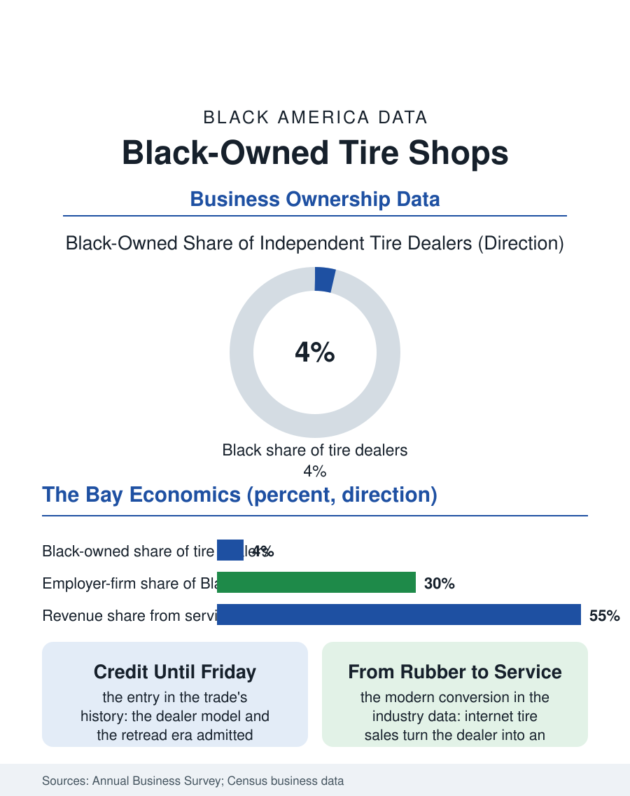

Black Business
Keeping It Rolling: Black-Owned Tire Shops
The independent tire dealer admitted Black capital when franchises would not, and the shop that carried the neighborhood to payday still anchors its corridor. The tire file.

The Black-owned tire shop is a small business with a long memory: the independent tire dealer was one of the storefront trades open to Black capital when the franchises and dealerships were closed, and the shop's bay doors still open in the neighborhoods where the tradition planted them. The business census counts several hundred Black-owned tire dealers and repair shops nationally. This article reads the tire file.
The Dealer Tradition
The tire business's structure explains its Black history. The manufacturer dealership model, unlike the automobile franchise's closed allocation, allowed independent dealers to buy and sell under the great brands' signs with relatively modest capital, and the retread era, when the recapped tire was a mass product, gave Black mechanics an entry trade with a skill and a furnace rather than a fortune. The community's garages grew into tire shops along the corridors, their customer base the neighborhood's cars, their credit extended on the handshake terms the oral histories record, since the tire is the archetypal emergency purchase, the blowout that cannot wait for payday, and the shop that carried the family until Friday owned its loyalty for a generation. The industry's consolidation pressed the independent from both ends, the manufacturers' company stores and the warehouse clubs' tire centers squeezing the price, while the big-box installation model stripped the service relationship that was the independent's moat. The survivors in the current census data are the service-rich shops, alignments, diagnostics, the fleet accounts with the local delivery and municipal fleets, whose contracts the shop owners describe as the modern form of the neighborhood's loyalty, a revenue base with paperwork.
The Modern Bay
The contemporary tire shop's economics run on labor as much as rubber: the tire itself is a commodity the internet prices transparently, the ship-to-installer model sending the customer to the shop with tires bought elsewhere, converting the dealer into an installer in a transaction the industry is still digesting. The Black-owned shop's position in the data reflects the small-retail pattern of the whole business section, employer firms a minority, receipts concentrated in the used tire segment at the market's bottom, whose margins and whose clientele are the neighborhood's own. The workforce pipeline runs through the same bay doors: the tire technician is an entry rung of the automotive trades whose ASE ladder the mechanics file climbs, and the shop's apprenticeship, formal or not, has started generations of Black technicians. The environmental file attaches to the trade in the scrap tire stream, the disposal fees and the dumping enforcement whose geography, the tire piles of the vacant lots in the disinvested districts, makes the legitimate shop's compliance cost a competitive burden against the informal operator, an enforcement asymmetry the trade associations of every city in this atlas's map have petitioned about. The supplier diversity programs of the fleet buyers, the utilities and the municipalities, are the file's growth channel, the multi-year fleet contract being the prize that capitalizes a shop into its second generation of lifts.
What the Shop Anchors
The tire file closes on the corner the shop occupies, literally: the tire shop is a landmark business, its sign and its stack of casings a fixture of the corridor's visual identity, its owner a known citizen whose sponsorships, the Little League's uniforms, the church's parking lot resealed, appear in the community's ledger rather than the census's. The succession file is the trade's open question, the founding generation of the post-1970 expansion now at retirement age across the small business files, the buyers for the independent shop thin where the chains' acquisition programs do not reach, and the employee-buyout and family succession models the business development literature prescribes being applied, in the cases the trade press celebrates, with the same deliberateness as the fleet contracts. The census counts the shops in the hundreds and the receipts modestly. The corridor counts them differently, as the place that has kept it rolling for forty years, through the retread era and the radial era and the run-flat era alike. The tire shop's product is the least glamorous in the business section and among the most essential, the four patches of contact between the community and the road, and the Black dealer's bay doors, open since the years when the road itself was segregated, are the file's sufficient summary.
More in Black Business
Black-Owned Businesses: Counts, Receipts, and the Representation Gap
About 161,000 Black-owned employer firms and three million solo ventures: how the Census Bureau counts Black business ownership, where firms concentrate, and the gap between population share and business share.
Black Median Net Worth: The Wealth Gap in Federal Reserve Data
The Federal Reserve puts Black median family net worth at $44,900, against $285,000 for White families — about 16 cents on the dollar. The widest gap in economic data.
Black Buying Power: The $1.8 Trillion Consumer Economy
Black buying power is estimated at about $1.8 trillion — larger than the economy of most nations. What the figure measures, who produces it, and what it buys.
Source: U.S. Census Bureau, Annual Business Survey and County Business Patterns for tire dealers; automotive aftermarket trade data.